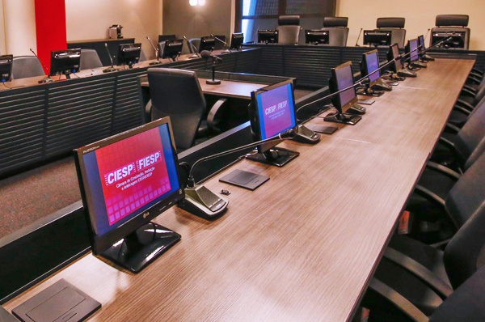

A Câmara de Conciliação, Mediação e Arbitragem Ciesp/Fiesp foi instituída em maio de 1995 pelo Centro das Indústrias do Estado de São Paulo (Ciesp) e pela Federação das Indústrias do Estado de São Paulo (Fiesp). Tem por objetivo administrar conciliações, mediações e arbitragens que lhe forem submetidas, prestando assessoria no desenvolvimento dos procedimentos. Possui gestão autônoma, independente e está há 25 anos auxiliando na consolidação dos meios adequados de solução de conflitos.

1. A Câmara de Conciliação, Mediação e Arbitragem de São Paulo Ciesp/Fiesp denominar-se-á "Câmara de Conciliação, Mediação e Arbitragem Ciesp/Fiesp", figurando neste instrumento com a designação, simplesmente, de "Câmara", localizada na Avenida Paulista, 1313, em São Paulo – SP.
2. A Câmara tem por objetivo administrar conciliações, mediações e
arbitragens que lhe forem submetidas, prestando assessoramento e
assistência no desenvolvimento da conciliação, mediação e arbitragem,
conforme disposto nos respectivos Regulamentos, tendo, ainda,
como atribuições:
a) elaborar cláusula-tipo de arbitragem, sem prejuízo de outra
voluntariamente adotada pelas partes;
b) manter relações e filiar-se a instituições ou órgãos de conciliação,
mediação e arbitragem, no país ou no exterior, bem
como celebrar convênios ou acordos de parceria ou cooperação,
por meio do Ciesp e/ou da Fiesp;
c) exercer qualquer atividade relacionada com os institutos jurídicos
da conciliação, mediação e arbitragem nos âmbitos nacional
e internacional.
3. A Câmara será constituída por Presidência, Conselho Superior e Secretaria.
3.1. A Presidência da Câmara será exercida na forma prevista neste Regimento.
3.2. O Conselho Superior será composto por Presidente, Vice-presidente e Conselheiros, em número não inferior a cinco, sempre em número ímpar.
3.3. A administração operacional da Câmara compete ao Secretário-geral.
4. Compete ao Presidente da Câmara:
a) administrar e representar a Câmara, delegando poderes
quando necessário;
b) aplicar e fazer aplicar este Regimento e os Regulamentos;
c) designar os integrantes do corpo permanente de conciliadores,
mediadores e árbitros;
d) exercer demais atribuições necessárias para o cumprimento
deste Regimento e dos Regulamentos;
e) indicar conciliadores, mediadores e árbitros, quando não
disposto de outra forma pelas partes, atendendo à natureza e à
característica do litígio, ressalvado o disposto no item 4.1;
f) expedir normas complementares e de procedimento, visando
dirimir dúvidas sobre aplicação deste Regimento e Regulamentos
referentes aos casos omissos;
g) alterar a tabela de custas e honorários da Câmara;
h) proceder às alterações necessárias nos Regulamentos;
i) instaurar, de ofício ou mediante requerimento, e presidir
sindicâncias na esfera administrativa, relativamente à conduta
de conciliadores, mediadores e árbitros, propondo ao Conselho
Superior, se for o caso, a medida de desligamento da Câmara,
assegurado o direito de defesa;
j) participar, como membro nato, de reuniões do Conselho Superior.
4.1. Na ausência e/ou impedimento do Presidente da Câmara, a indicação de conciliadores, mediadores e árbitros disposta na alínea "e" será de competência conjunta do Presidente, do Vice-presidente do Conselho Superior e do Vice-presidente da Câmara.
5. Compete ao Vice-presidente da Câmara:
a) auxiliar o Presidente no desempenho das funções, em todos
os assuntos pertinentes;
b) substituir o Presidente nas ausências e nos impedimentos,
ressalvado o disposto no item 4.1;
c) participar de reuniões do Conselho Superior.
6. Compete ao Conselho Superior da Câmara:
a) a coordenação, a supervisão e a orientação relativas às suas
funções, promovendo a política estratégica para a consecução
de seus objetivos;
b) a organização, a disciplina e a edição de normas, para assegurar
o cumprimento de suas finalidades;
c) a divulgação de sua atuação e a disseminação da cultura de
soluções alternativas de controvérsias e conflitos de interesses,
contribuindo para a pacificação social;
d) propor ao Ciesp e à Fiesp a celebração de convênios e parcerias,
para a expansão de suas atividades, assim como a manutenção
de intercâmbio com instituições culturais, científicas e
tecnológicas, associações profissionais e universitárias, empresas
públicas e privadas, visando ao desenvolvimento do método
alternativo de solução de litígios;
e) a proposição de estratégias e planejamento para a Câmara;
f) as decisões relativas aos incidentes e às deliberações sobre
consultas formuladas pelo Presidente da Câmara nos procedimentos
de conciliação, mediação e arbitragem;
g) sanar dúvidas e auxiliar a Presidência do Conselho em suas
decisões administrativas;
h) homologar a designação de conciliadores, mediadores e árbitros
para o corpo permanente da Câmara, conforme disposto
no item 4.c deste Regimento;
i) imposição de medida administrativa de desligamento da lista
de Conciliadores, Mediadores e Árbitros, observado o item 4.i.
7. Compete ao Presidente do Conselho Superior:
a) representar o Conselho Superior e exercer funções inerentes
à Presidência;
b) designar e presidir reuniões, determinando as convocações
necessárias;
c) delegar atribuições a membros do Conselho Superior da Câmara.
8. Compete ao Vice-presidente do Conselho Superior:
a) auxiliar o Presidente no desempenho das funções, em todos
os assuntos pertinentes aos objetivos da Câmara;
b) substituir o Presidente nas ausências e nos impedimentos.
9. Compete aos Conselheiros:
a) apresentar propostas para o melhor funcionamento da Câmara e do Conselho Superior;
b) participar das reuniões, dos debates e das deliberações do
Conselho.
10. Compete ao Secretário-geral:
a) assegurar o bom desempenho dos serviços da Câmara, inclusive
prestando as informações necessárias às partes e aos
procuradores;
b) receber e expedir notificações e comunicados nos casos previstos
nos Regulamentos;
c) manter sob sua guarda os documentos da Câmara e atualizados
os registros, resguardando o sigilo necessário;
d) diligenciar para o pagamento das custas e honorários, fornecendo
às partes a respectiva documentação.
10.1 O Secretário-geral será remunerado e escolhido pelo Centro das Indústrias do Estado de São Paulo (Ciesp), dentre profissionais com especialidade na matéria.
11. O Presidente e o Vice-presidente da Câmara, os do Conselho Superior e demais Conselheiros serão designados pelo Presidente do Centro das Indústrias do Estado de São Paulo (Ciesp) e pelo Presidente da Federação das Indústrias do Estado de São Paulo (Fiesp), devendo recair a escolha em pessoa de elevada reputação e notável saber jurídico ou técnico.
11.1 O Presidente, o Vice-presidente da Câmara e os integrantes do Conselho Superior não serão remunerados a qualquer título pelo exercício das atribuições, que são consideradas honoríficas.
12. Os conciliadores, mediadores e árbitros serão integrantes do respectivo quadro permanente e deverão ter reputação ilibada e reconhecido saber jurídico ou técnico, mediante designação pelo Presidente da Câmara e homologação pelo Conselho Superior;
12.1 No desempenho das funções, os conciliadores, mediadores e árbitros deverão ser independentes, imparciais, discretos, competentes, diligentes e observar as normas do Código de Ética.
13. No âmbito da Câmara, o Presidente, o Vice-presidente, os membros do Conselho Superior, o Secretário-geral e os servidores da Secretaria estarão impedidos de participar dos procedimentos de conciliação, mediação e arbitragem se tiverem interesse no litígio.
14. Salvo disposição das partes em contrário, estão impedidos de atuar como árbitros, conciliadores e mediadores que tiverem participado de conciliações e mediações anteriores à subsequente arbitragem.
15. Toda e qualquer mudança a ser realizada na estrutura ou no Regimento Interno da Câmara deverá, obrigatoriamente, passar pela aprovação do Presidente do Ciesp e da Fiesp.
São Paulo, 6 de outubro de 2011
Centro das Indústrias do Estado de São Paulo (Ciesp)
Federação das Indústrias do Estado de São Paulo (FIESP)
Paulo Antonio Skaf
Presidente
Sydney Sanches
Ministro aposentado e ex-Presidente do Supremo Tribunal Federal
Ellen Gracie Northfleet
Ministra aposentada e ex-Presidente do Supremo Tribunal Federal
Kazuo Watanabe
Desembargador aposentado do Tribunal de Justiça de São Paulo
José Carlos de Magalhães
Advogado e Professor em São Paulo
Ada Pellegrini Grinover "in memoriam"
Advogada e Professora em São Paulo
Adriana Braghetta
Advogada e Professora em São Paulo
Adriana Noemi Pucci
Advogada em São Paulo
Antonio Corrêa Meyer
Advogado em São Paulo
Carlos Alberto Carmona
Advogado em São Paulo
Debora Visconte
Advogada em São Paulo
Eduardo de Albuquerque Parente
Advogado e Professor em São Paulo
Fernanda Rocha Lourenço Levy
Advogada em São Paulo
Giovanni Ettore Nanni
Advogado e Professor em São Paulo
Hélcio Honda
Advogado em São Paulo
Hermes Marcelo Huck
Advogado e Professor em São Paulo
Luiz Fernando Alongi
Engenheiro Civil em São Paulo
Mario Sérgio Duarte Garcia
Advogado em São Paulo
Martim Della Valle
Advogado em São Paulo e Lisboa
Paula Andrea Forgioni
Advogada e Professora em São Paulo
Pedro Antonio Batista Martins
Advogado no Rio de Janeiro
Selma Maria Ferreira Lemes
Advogada e Professora em São Paulo
João Luiz Lessa Neto
Advogado
Lilian Elizabeth Menezes Bertolani
Advogada
Daniel Falci
Case Manager
Jéssica Cacique
Case Manager
Larissa Hollo
Case Manager